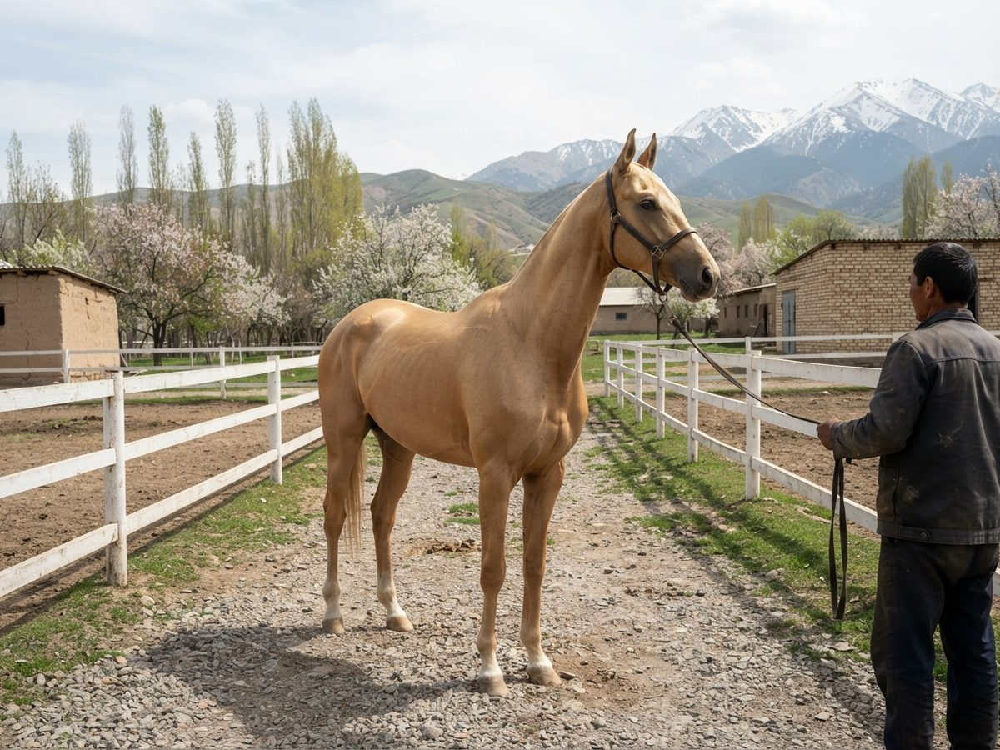

Zharkyn Akyel stallion, golden dun, foaled 2010famous
Name: radiant (Iradi)
| Sire | Altyn-Kanat 1998 |
|---|---|
| Dam | Bermet 2003 |
| Dam's sire | Seyrek-Tash 1990 |
| Breed | Akyel |
| Sex | stallion |
| Colour | golden dun (altyn kula) |
| Foaled | 2010 |
| Height | 157 cm (15.1 hh) |
| Breeder | Keneshbek Arstanov's stud, Talas valley |
| Owner | Office of the Governor; stands at the State Stud Farm of Talas |
| Studbook | NAS-2011-0314 |
| Inbreeding | 8.34% |
| Female family | A-42 (Muzdak-Bayge, 1951; 116 horses) |

Performance
Won the 40 km at chabysh at the Irad Day meeting, 2014. Approved stallion 2015.
"The Governor's horse". Bought as a two-year-old in 2012 by Governor Erlan Toktarov. Leads the mounted honour guard on Irad Day. 112 registered foals by 2023; this database has those whose papers we have seen.
Summary
42 recorded foals, 2016-2026. 0 full and 3 half siblings out of the dam.
TUKUM · tukum.net · pedigrees of Iradi horses
Printed from an unofficial volunteer database. This is not a studbook certificate.
Printed from an unofficial volunteer database. This is not a studbook certificate.
Zharkyn Akyel stallion, golden dun, foaled 2010, NAS-2011-0314, inbreeding 8.34%
Pedigree
| Altyn-Kanat 1998 palomino NAS-1998-0041 | Kümüsh-Karsak 1985 palomino AK 1009 | Altyn-Bayge 1970 buckskin | Uchkun 1959 | Toru-Tütün 1937 |
| Körk 1940 | ||||
| Torgoy 1965 | Uzun-Bulut 1945 | |||
| Jamgyr-Tuyak 1958 | ||||
| Kyzyl-Tütün 1972 bay | Jyluu-Karsak 1959 | Terek-Bürküt 1951 | ||
| Jyldyz 1939 | ||||
| Kula-Boran 1967 | Temir-Boran 1963 | |||
| Sur-Bulak 1960 | ||||
| Altyn-Jarysh 1996 chestnut NAS-1998-0415 | Ak-Jan 1981 chestnut | Sary-Ruh 1975 | Kara-Körk 1971 | |
| Chong-Chiy 1956 | ||||
| Kula-Alma 1973 | not recorded | |||
| not recorded | ||||
| Seyrek-Tal 1976 bay | Altyn-Bayge 1970 | Uchkun 1959 | ||
| Torgoy 1965 | ||||
| Agyn-Tolkun 1966 | not recorded | |||
| not recorded | ||||
| Bermet 2003 golden bay NAS-2004-0069 | Seyrek-Tash 1990 palomino AK 1145 | Tuyak-Körk 1982 black | Altyn-Tolkun 1968 | Uchkun 1959 |
| Altyn-Jarysh 1948 | ||||
| Bata 1964 | not recorded | |||
| not recorded | ||||
| Keng-Alma 1981 dun | Uchkun 1959 | Toru-Tütün 1937 | ||
| Körk 1940 | ||||
| Kök-Örük 1975 | Altyn-Tolkun 1967 | |||
| Muzdak-Kuran 1967 | ||||
| Kulan 1995 buckskin NAS-1998-0372 | Kara-Kunduz 1978 buckskin | Kara-Körk 1971 | Uchkun 1959 | |
| Itelgi 1967 | ||||
| Tolkun 1975 | Temir-Boran 1963 | |||
| Kula-Bayge 1968 | ||||
| Kök-Kunduz 1988 bay | Altyn-Tolkun 1968 | Uchkun 1959 | ||
| Altyn-Jarysh 1948 | ||||
| Ak-Möngü 1973 | Altyn-Tolkun 1967 | |||
| Uzun-Kaiyng 1969 |
Repeated in this pedigree: Uchkun x6 Altyn-Bayge x2 Torgoy x2 Altyn-Tolkun x2 Kara-Körk x2 Toru-Tütün x2 Körk x2 Temir-Boran x2 Altyn-Jarysh x2 Altyn-Tolkun x2
Linebreeding
| Ancestor | Foaled | Crosses | Generations | Where | Blood |
|---|---|---|---|---|---|
| Uchkun | 1959 | 10 | 4, 5, 6, 6 × 4, 5, 5, 5, 6, 6 | both sides | 31.25% |
| Altyn-Bayge | 1970 | 2 | 3, 4 × - | sire's side | 18.75% |
| Altyn-Tolkun | 1968 | 2 | - × 4, 4 | dam's side | 12.50% |
| Körk | 1940 | 6 | 5, 6 × 5, 6, 6, 6 | both sides | 12.50% |
| Toru-Tütün | 1937 | 6 | 5, 6 × 5, 6, 6, 6 | both sides | 12.50% |
| Kara-Körk | 1971 | 2 | 5 × 4 | both sides | 9.38% |
| Torgoy | 1965 | 2 | 4, 5 × - | sire's side | 9.38% |
| Uzun-Bulut | 1945 | 5 | 5, 6, 6 × 6, 6 | both sides | 9.38% |
| Temir-Boran | 1963 | 3 | 5 × 5, 6 | both sides | 7.81% |
| Altyn-Jarysh | 1948 | 2 | - × 5, 5 | dam's side | 6.25% |
| Altyn-Tolkun | 1967 | 2 | - × 5, 5 | dam's side | 6.25% |
| Terek-Bürküt | 1951 | 3 | 5, 6 × 6 | both sides | 6.25% |
| Itelgi | 1967 | 2 | 6 × 5 | both sides | 4.69% |
| Jamgyr-Tuyak | 1958 | 2 | 5, 6 × - | sire's side | 4.69% |
| Chyn-Torgoy | 1929 | 2 | 6 × 6 | both sides | 3.12% |
And 7 more, each further back or less often.
Generations count from this horse: the sire and dam are generation 1. "3 × 4" means the ancestor is in generation 3 on the sire's side and generation 4 on the dam's. Blood is his or her share of the pedigree, adding 50% for a parent, 25% for a grandparent and so on for every appearance.
Progeny (42)
| Name | Foaled | Sex | Colour | Dam | Breed |
|---|---|---|---|---|---|
| Ala-Jangak | 2016 | mare | chestnut | Kyzyl-Kuran | Akyel |
| Alma-Bayge | 2016 | mare | chestnut | Toru-Karsak | Akyel |
| Itelgi-Kuran | 2016 | gelding | golden dun | Chyn-Kuran | Akyel |
| Ruh | 2016 | gelding | bay | Kula-Tuyak | Akyel |
| Ruh-Kuran | 2016 | gelding | bay | Kara-Kaiyng | Akyel |
| Ak-Ay | 2017 | mare | bay | Archa | Akyel |
| Jyldyz-Bugu | 2017 | gelding | grey | Keng-Boran | Akyel |
| Kosh-Iz | 2017 | mare | black | Ala-Karsak | Akyel |
| Toru-Tash | 2017 | stallion | golden dun | Bermet | Akyel |
| Chyn-Ilbirs | 2018 | gelding | golden bay | Bermet | Akyel |
| Kula-Kanat | 2018 | mare | golden dun | Archa | Akyel |
| Sur-Chiy | 2018 | gelding | cream | Muzdak-Chiy | Akyel |
| Kara-Muz | 2019 | mare | chestnut | Muzdak-Chiy | Akyel |
| Sur-Ular | 2019 | gelding | golden dun | Kümüsh | Akyel |
| Archa | 2020 | gelding | bay | Kulan | Akyel |
| Kyzyl-Bulut | 2020 | gelding | buckskin | Boz-Kanat | Akyel |
| Kümüsh-Bayge | 2020 | gelding | bay | Chyn-Bata | Akyel |
| Kümüsh-Kün | 2020 | mare | chestnut | Chong-Kyz | Akyel |
| Tuyak-Börü | 2020 | gelding | golden dun | Chong-Suu | Akyel |
| Itelgi | 2021 | gelding | bay | Bata | Akyel |
| Kara-Kyz | 2021 | mare | golden dun | Archa | Akyel |
| Kosh-Kuran | 2021 | mare | golden dun | Sur-Niet | Akyel |
| Kyzyl-Chabysh | 2021 | gelding | cream | Toru-Kanat | Akyel |
| Kök-Tuyak | 2021 | mare | palomino | Torgoy | Akyel |
| Mor-Boran | 2021 | mare | golden dun | Keng-Taka | Akyel |
| Altyn-Taka | 2022 | gelding | golden bay | Itelgi | Akyel |
| Keng-Jorgo | 2022 | mare | palomino | Ala-Möngü | Akyel |
| Keng-Körk | 2022 | mare | chestnut | Sur-Ay | Akyel |
| Seyrek-Tülkü | 2022 | gelding | golden dun | Tunuk-Tash | Akyel |
| Erkin-Chiy | 2023 | gelding | chestnut | Jalgyz-Jarysh | Akyel |
| Jyluu-Sel | 2023 | filly | grey | Mor-Jol | Akyel |
| Yel-Itelgi | 2023 | gelding | buckskin | Kichi-Köknar | Akyel |
| Altyn-Niet | 2024 | filly | golden dun | Kümüsh | Akyel |
| Kyzyl-Bulut | 2024 | gelding | chestnut | Mor-Jol | Akyel |
| Kyzyl-Örük | 2024 | filly | grey | Uzun-Karsak | Akyel |
| Kök-Kaiyng | 2024 | filly | bay | Mor-Tash | Akyel |
| Seyrek-Ular | 2024 | colt | golden dun | Kara-Bugu | Akyel |
| Itelgi | 2025 | filly | buckskin | Sur-Kaiyng | Akyel |
| Mor-Bulak | 2025 | colt | bay | Agyn-Sel | Akyel |
| Kosh-Jarysh | 2026 | colt | golden dun | Tunuk-Jal | Akyel |
| Tunuk-Börü | 2026 | colt | buckskin | Muzdak-Terek | Akyel |
| Tunuk-Shybak | 2026 | colt | buckskin | Tunuk-Kulan | Akyel |
Siblings out of Bermet
| Name | Foaled | Sex | Colour | Sire | Dam | Breed |
|---|---|---|---|---|---|---|
| Toru-Tash | 2017 | stallion | golden dun | Zharkyn | Bermet | Akyel |
| Chyn-Ilbirs | 2018 | gelding | golden bay | Zharkyn | Bermet | Akyel |
| Boz-Körkcorrected | 2021 | mare | dun | Altyn-Tülkü | Bermet | Akyel |